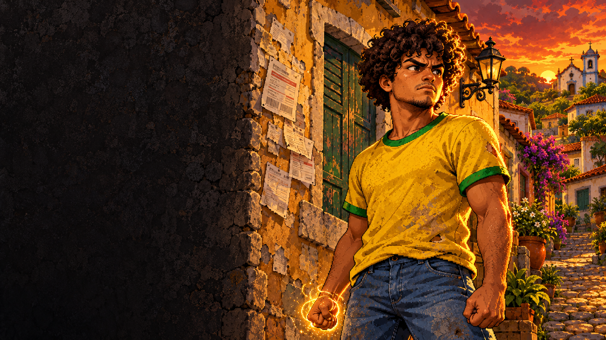

GOLPE POR GOLPE.
Encadeie socos, esquive no momento certo e responda com Onda e Palma.

UM RPG NO BRASIL DA VUVUZELA
Dívida que não acaba. Conta que só cresce.
No Brasil da Vuvuzela, sua revolta vira poder.
GRÁTIS NO NAVEGADOR · TECLADO E MOUSE
Um trabalhador.
Muita conta a acertar.
PREPARANDO A RESISTÊNCIA
Conectando…
O primeiro carregamento pode levar alguns minutos.
Mantenha esta aba aberta.
BOLETOS / JUROS ABUSIVOS / PERSEGUIÇÃO / RESISTÊNCIA
A HISTÓRIA / CAPÍTULO 01
O salário acaba antes dos boletos.
O Companheiro não parece se importar.
No Bairro do Trabalhador, Seu Bonero tem uma pista. No Distrito do Poder, alguém mantém o país preso a dívidas, juros e medo. Cabe a você reunir as provas — e enfrentar quem está por trás do esquema.
Boletos duplicados. Juros sobre juros.
Descubra como os agentes mantêm o bairro calado.
Recupere o registro adulterado do distrito ficcional.
E para conversar e investigar. N para abrir o dossiê.
A REVOLTA TEM MOVIMENTO
Encadeie socos, esquive no momento certo e responda com Onda e Palma.
Ganhe níveis, escolha talentos e avance até a Forma Ascendente.
Explore a ilha. Domine o voo. Há coisas que o bairro ainda não contou.
ANTES DE ENTRAR
Escolha seu nome dentro do jogo e procure Seu Bonero ao sul da praça.
Para computador com WebGL 2, teclado e mouse. Nome e progresso ficam neste navegador, separados da versão Windows. Antes de fechar a aba, pause com Esc para salvar.
Voltar ao jogo ↑